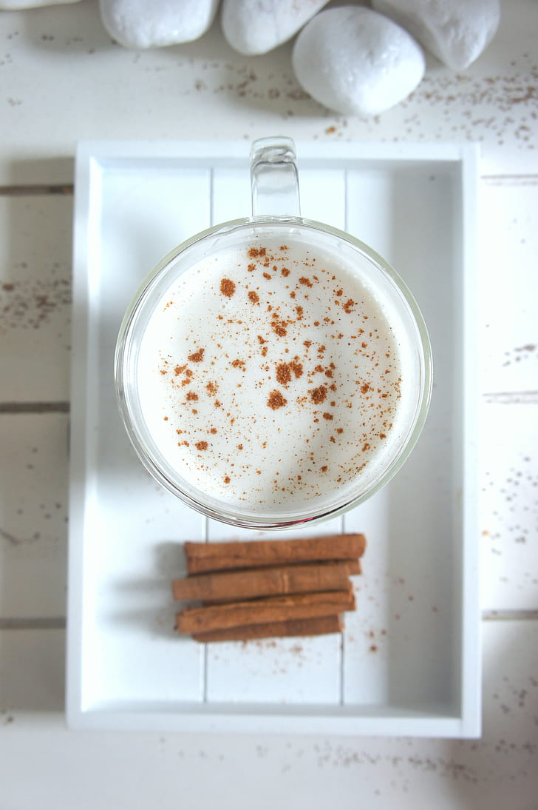

A Summer Classic
Horchata
Recipe adapted from Lauren Allen at Tastes Better From Scratch

Photo by Charlotte May via Pexels
Ingredients
- 1½ cups uncooked long grain rice
- 2 cinnamon sticks
- 4 cups of hot water
- 2 cups of whole milk or almond milk
- 2 tsp vanilla extract
- 2 tsp ground cinnamon
- ⅓ cup granulated sugar (add more to taste if needed)
Conversion
Rate this recipe
Instructions
- To a blender, add rice, 2 cups of hot water, and 2 Mexican cinnamon sticks.
- Blend until the rice and cinnamon sticks are roughly ground. Add the remaining water and blend again.
- Pour contents into a pitcher or container with a fitted lid and refrigerate overnight or for at least 8
hours.
- Pour the rice mixture through a fine mesh strainer or cheesecloth, into a pitcher. Discard the rice.
- Stir in the milk, vanilla, cinnamon, and sugar (to your preference). Chill until ready to serve. Stir well
before serving and serve over ice.
Back to the main page
This page created as academic activity only